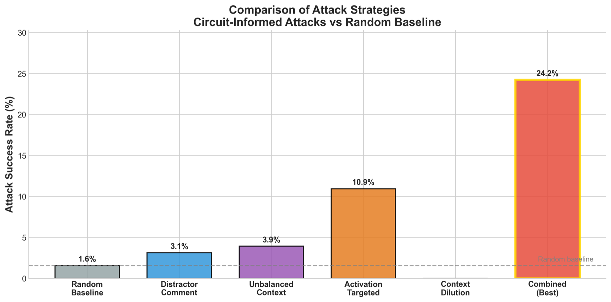

Why I built it
[In Sisi's own words: what made him ask why some inputs break a network and others don't, and what he wanted to find out. The Academy asks exactly this.]
How I built it
I combined Lipschitz continuity bounds with the symmetry structure of sparse circuits. That gives a lower bound on how far an input sits from the decision boundary, and a per-family "directional budget" that says which way an attack has to push.
Then I tested the predictions on OpenAI's interpretable sparse circuits, on two independent tasks: bracket matching (estimated L ≈ 3.04) and quote matching (L ≈ 1.35). I predicted which inputs were vulnerable first and attacked second.

The hard part
[What didn't work at first, and what he changed.]
What I did
- The theory: the distance bound and the directional budget. The underlying collision result is its own short note.
- All of the experiment code, data and figures in the repo.
- The paper and the presentation. [confirm, and name any mentor]
Where it stands
Paper written, and the code and data are public. [Next step, in his words.]